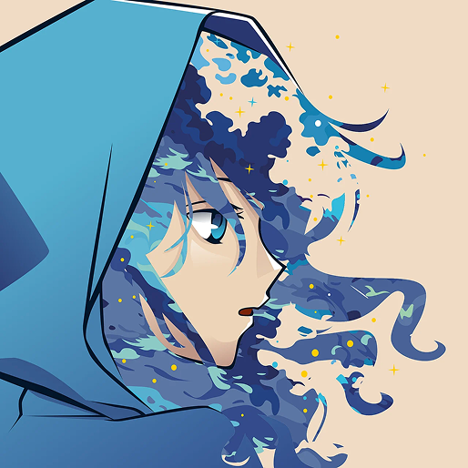
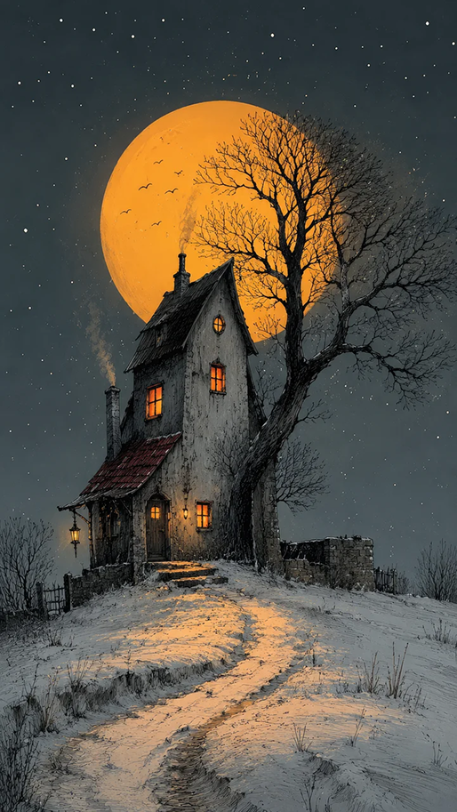
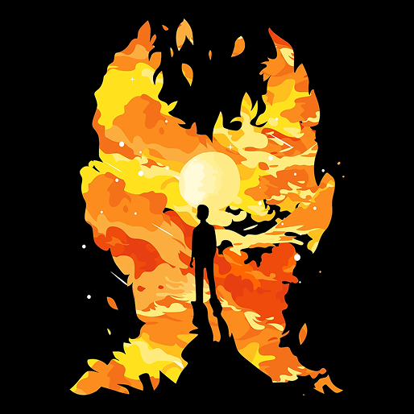

 Quando a Arte Ultrapassa os Limites da Tela. Já parou para reparar nos mínimos detalhes daquela cena de anime que te deixou sem palavras? Mais do que simples desenhos... 01/10/2026
 A Solidão que Inspira o Traço Perfeito. Às vezes o silêncio é o melhor companheiro de criação. Uma paleta fria, uma lua imensa e a liberdade de criar sem julgamentos... 28/09/2026
 Entropia e Cor: Deixe o Acidente Guiar a Obra. Nem toda obra nasce de um plano. Algumas das criações mais marcantes surgem do caos, do erro transformado em intenção... 15/09/2026